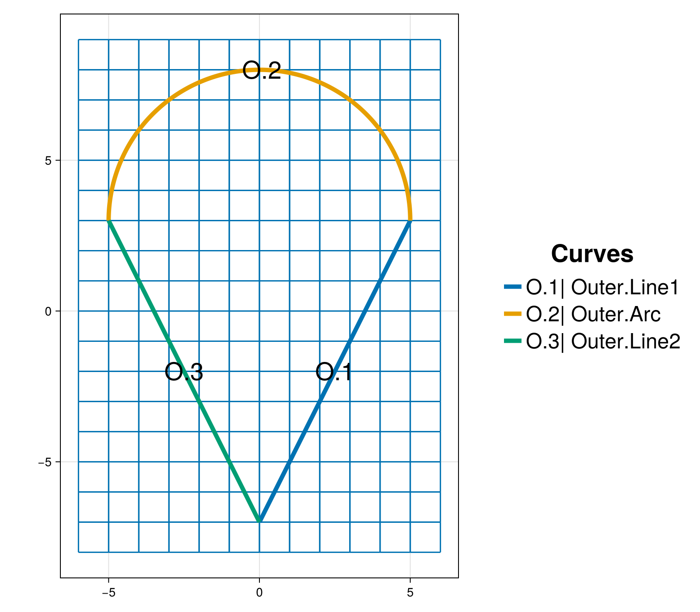
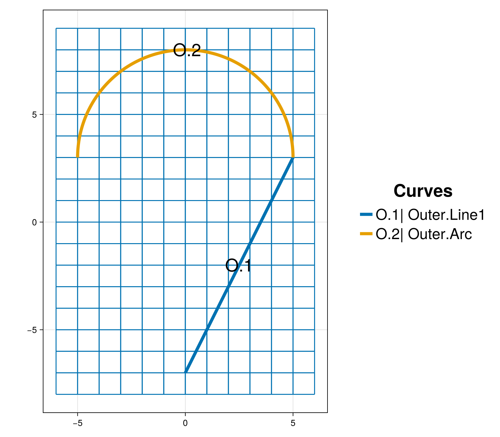
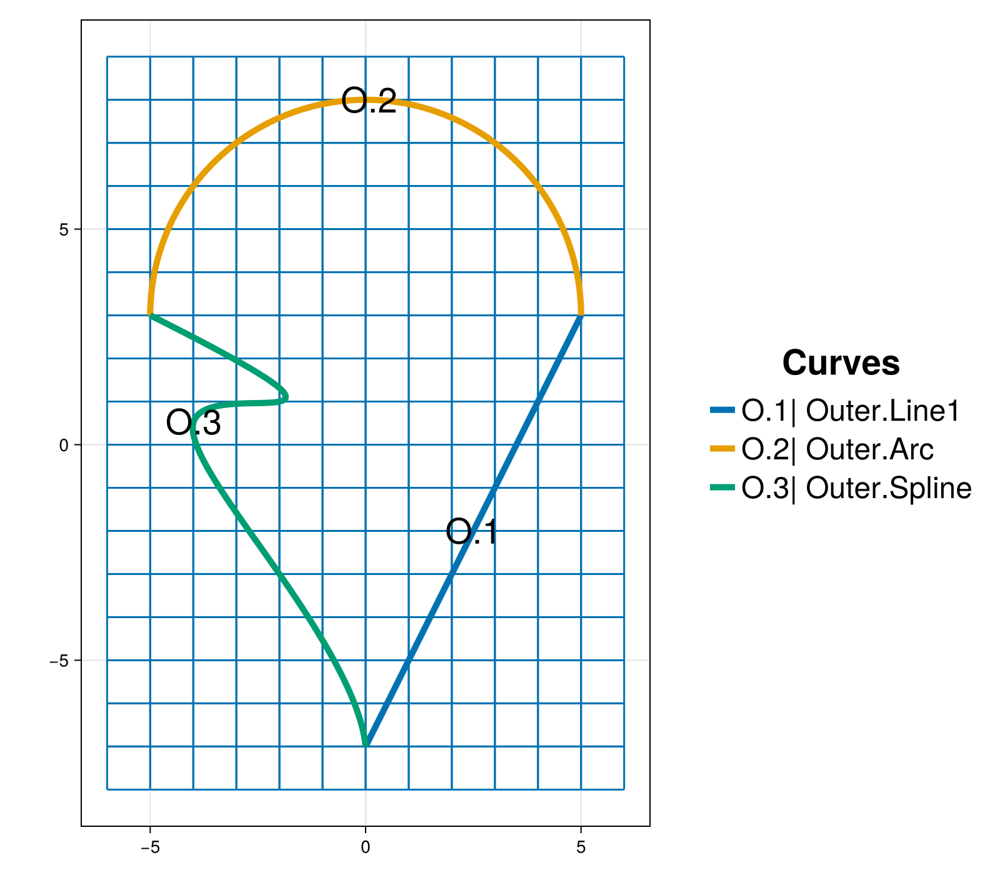
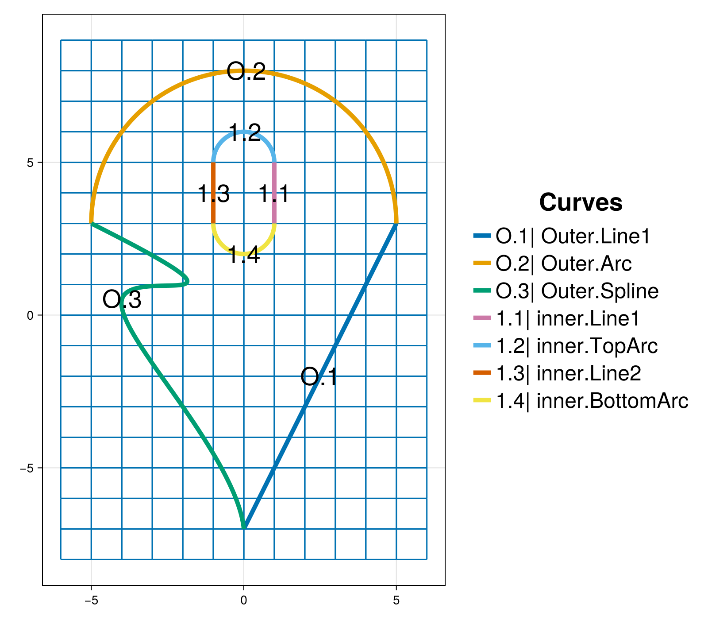
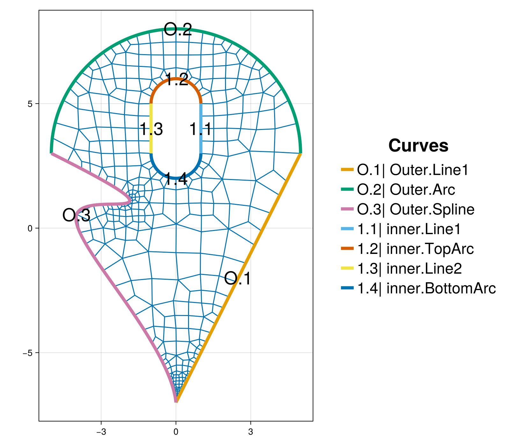
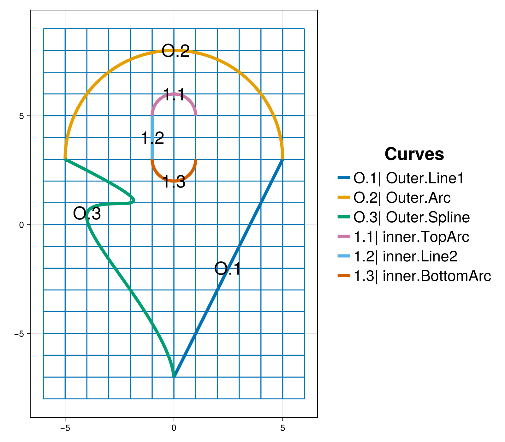
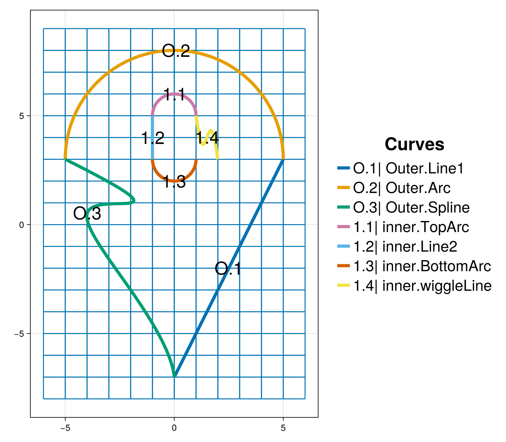
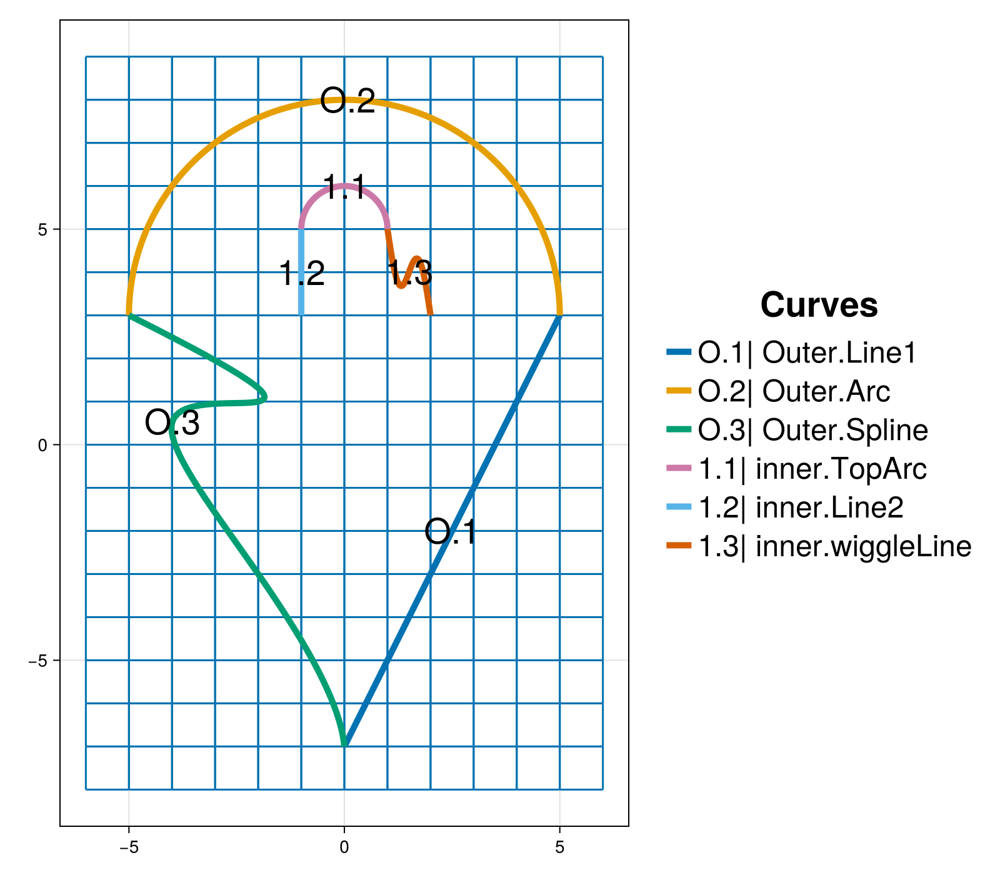
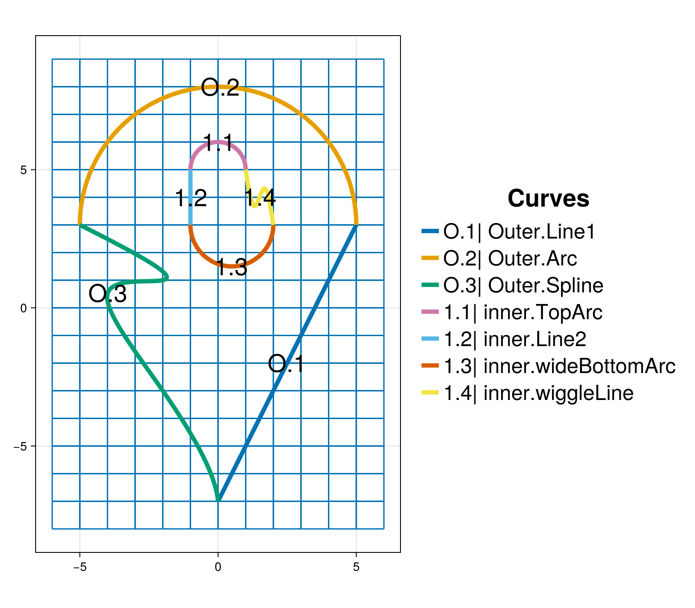
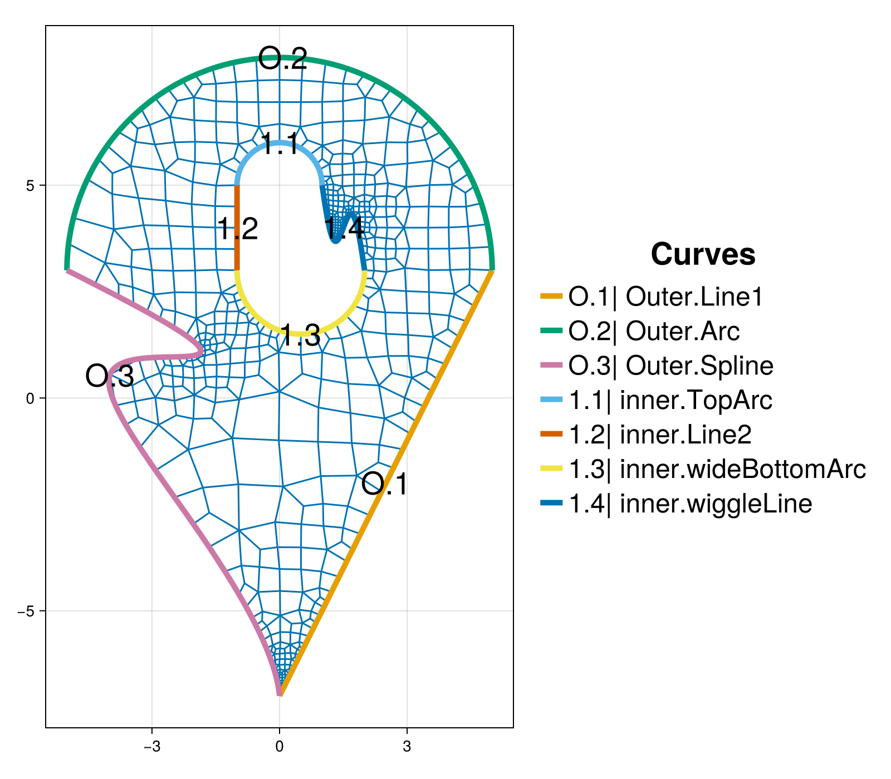

Creating and editing curves
The purpose of this tutorial is to demonstrate how to inner and outer boundary curve chains. By a "chain" we mean a closed curve that is composed of multiple pieces. Each chain can be a combination of different curve types, e.g., a circular arc can connect to a spline. It also shows how to modify, remove, and add new pieces to an existing curve chain. The undo and redo capabilities of the interactive mesh tool are briefly discussed. The outer and inner boundary curves, background grid as well as the mesh will be visualized for quality inspection.
It provides details and clarification for the script interactive_edit_curves.jl from the examples folder.
Synopsis
This tutorial demonstrates how to:
- Create and edit an outer boundary chain.
- Create and edit an inner boundary chain.
- Add the background grid when an outer boundary curve is present.
- Visualize an interactive mesh project.
- Discuss undo / redo capabilities.
- Construct and add parametric spline curves.
- Construct and add a curve from parametric equations.
- Construct and add straight line segments.
- Construct and add circular arc segments.
Initialization
Before we start, we need to load the required packages. Besides HOHQMesh.jl, we use CairoMakie.jl for visualization. Alternatively, one can use GLMakie for interactive visualization in a Julia REPL session.
using HOHQMeshusing CairoMakieNow we are ready to interactively generate unstructured quadrilateral meshes!
We create a new project with the name "sandbox" and assign "out" to be the folder where any output files from the mesh generation process will be saved. By default, the output files created by HOHQMesh will carry the same name as the project. For example, the resulting HOHQMesh control file from this tutorial will be named sandbox.control. If the folder out does not exist, it will be created automatically in the current file path.
sandbox_project = newProject("sandbox", "out");Add the outer boundary chain
We first create the outer boundary curve chain that is composed of three pieces
- Straight line segment from $(0, -7)$ to $(5, 3)$.
- Half-circle arc of radius $r=5$ centered at $(0, 3)$.
- Straight line segment from $(-5, 3)$ to $(0, -7)$.
Each segment of the curve is created separately. The straight line segments are made with the function newEndPointsLineCurve and given unique names:
outer_line1 = newEndPointsLineCurve("Line1", # curve name [0.0, -7.0, 0.0], # start point [5.0, 3.0, 0.0]); # end pointouter_line2 = newEndPointsLineCurve("Line2", # curve name [-5.0, 3.0, 0.0], # start point [0.0, -7.0, 0.0]); # end pointTo create the circle arc we use the function newCircularArcCurve where we specify a name for the curve as well as the radius and center of the circle. The arc can have an arbitrary length dictated by the start and end angle, e.g., for a half-circle we take the angle to vary from $0$ to $180$ degrees.
outer_arc = newCircularArcCurve("Arc", # curve name [0.0, 3.0, 0.0], # center 5.0, # radius 0.0, # start angle 180.0, # end angle "degrees"); # units for angleWe use "degrees" to set the angle bounds, but "radians" can also be used. The name of the curve stored in the dictionary outer_arc is assigned to be "Arc".
The curve names "Line1", "Line2", and "Arc" are the labels that HOHQMesh will give to these boundary curve segments in the resulting mesh file.
The three curve segments stored in the variables outer_line1, outer_line2, and outer_arc are then added to the sandbox_project with a counter-clockwise orientation as required by HOHQMesh.
addCurveToOuterBoundary!(sandbox_project, outer_line1)addCurveToOuterBoundary!(sandbox_project, outer_arc)addCurveToOuterBoundary!(sandbox_project, outer_line2)Added curve Line1 to the outer boundary chain.
Added curve Arc to the outer boundary chain.
Added curve Line2 to the outer boundary chain.Add a background grid
HOHQMesh requires a background grid for the mesh generation process. This background grid sets the base resolution of the desired mesh. HOHQMesh will automatically subdivide from this background grid near sharp features of any curved boundaries.
For a domain bounded by an outer boundary curve, this background grid is set by indicating the desired element size in the $x$ and $y$ directions. To start, we set the background grid for sandbox_project to have elements with side length one in each direction
addBackgroundGrid!(sandbox_project, [1.0, 1.0, 0.0]);We visualize the outer boundary curve chain and background grid with the following Here, we take the sum of the keywords MODEL and GRID in order to simultaneously visualize the outer boundary and background grid. The resulting plot is given below. The chain of outer boundary curves is called "Outer" and it contains three curve segments "Line1", "Arc", and "Line2" labeled in the figure by O.1, O.2, and O.3, respectively. The optional argument figureSize is used here to produce plots with reduced white space for better presentation in the docs.
plotProject!(sandbox_project, MODEL+GRID; figureSize = (800, 700))
Edit the outer boundary chain
Suppose that the domain boundary requires a curved segment instead of the straight line "Line2". We will replace this line segment in the outer boundary chain with a cubic spline.
First, we remove the "Line2" curve from the "Outer" chain with the command
removeOuterBoundaryCurveWithName!(sandbox_project, "Line2")Alternatively, we can remove the curve "Line2" using its index in the "Outer" boundary chain.
removeOuterBoundaryCurveAtIndex!(sandbox_project, 3)This removal strategy is useful when the curves in the boundary chain do not have unique names. Be aware that when curves are removed from a chain it is possible that the indexing of the remaining curves changes.
The plot automatically updates and we see that the outer boundary is open and contains two segments: "Line1" and "Arc".

Next, we create a parametric cubic spline curve from a given set of data points. In order to make a closed outer boundary chain the cubic spline must begin at the endpoint of the curve "Arc" and end at the first point of the curve "Line1". This ensures that the new spline curve connects into the boundary curve chain with the correct orientation. To create a parametric spline curve we directly provide data points in the code. These points take the form [t, x, y, z] where t is the parameter variable that varies between $0$ and $1$. The spline curve constructor newSplineCurve also takes the number of points as an input argument.
spline_data = [ [0.0 -5.0 3.0 0.0] [0.25 -2.0 1.0 0.0] [0.5 -4.0 0.5 0.0] [0.75 -2.0 -3.0 0.0] [1.0 0.0 -7.0 0.0] ];outer_spline = newSplineCurve("Spline", 5, spline_data);Now we add the spline curve outer_spline into the sandbox_project.
addCurveToOuterBoundary!(sandbox_project, outer_spline)Added curve Spline to the outer boundary chain.The figure updates automatically to display the "Outer" boundary chain with the new "Spline" curve labeled O.3.

Add an inner boundary chain
We create a pill shaped inner boundary curve chain composed of four pieces
- Straight line segment from $(1, 3)$ to $(1, 5)$.
- Half-circle arc of radius $r=1$ centered at $(0, 5)$.
- Straight line segment from $(-1, 5)$ to $(-1, 3)$.
- Half-circle arc of radius $r=1$ centered at $(0, 3)$.
Similar to the construction of the "Outer" boundary chain, each segment of this inner boundary chain is created separately. The straight line segments are made with the function newEndPointsLineCurve and given unique names:
inner_line1 = newEndPointsLineCurve("Line1", # curve name [1.0, 3.0, 0.0], # start point [1.0, 5.0, 0.0]); # end pointinner_line2 = newEndPointsLineCurve("Line2", # curve name [-1.0, 5.0, 0.0], # start point [-1.0, 3.0, 0.0]); # end pointTo create the circle arcs we use the function newCircularArcCurve where we specify a name for the curve as well as the radius and center of the circle. In order to create an inner curve chain with counter-clockwise orientation the angle for the bottom half-circle arc centered at $(0, 3)$ varies from $-180$ to $0$ degrees. The top half-circle arc centered at $(0, 5)$ has an angle that varies from $0$ to $180$ degrees. The construction of the two circle arcs are
inner_bottom_arc = newCircularArcCurve("BottomArc", # curve name [0.0, 3.0, 0.0], # center 1.0, # radius -pi, # start angle 0.0, # end angle "radians"); # units for angleinner_top_arc = newCircularArcCurve("TopArc", # curve name [0.0, 5.0, 0.0], # center 1.0, # radius 0.0, # start angle 180.0, # end angle "degrees"); # units for angleNote, we use "radians" to set the angle bounds for inner_bottom_arc and "degrees" for the angle bounds of inner_top_arc.
The curve names "Line1", "Line2", "BottomArc", and "TopArc" are the labels that HOHQMesh will give to these inner boundary curve segments in the resulting mesh file.
The four curve segments stored in the variables inner_line1, inner_line2, inner_bottom_arc and outer_arc are added to the sandbox_project in counter-clockwise order as required by HOHQMesh.
addCurveToInnerBoundary!(sandbox_project, inner_line1, "inner")addCurveToInnerBoundary!(sandbox_project, inner_top_arc, "inner")addCurveToInnerBoundary!(sandbox_project, inner_line2, "inner")addCurveToInnerBoundary!(sandbox_project, inner_bottom_arc, "inner")Added curve Line1 to the inner chain.
Added curve TopArc to the inner chain.
Added curve Line2 to the inner chain.
Added curve BottomArc to the inner chain.This inner boundary chain name "inner" is used internally by HOHQMesh. The visualization of the background grid automatically detects that curves have been added to the sandbox_project and the plot is updated, as shown below. The chain for the inner boundary curve chain is called inner and it contains a four curve segments "Line1", "TopArc", "Line2", and "BottomArc" labeled in the figure by 1.1, 1.2, 1.3, and 1.4, respectively.

Generate the mesh
We next generate the mesh from the information contained in the sandbox_project. This will output the following files to the out folder:
sandbox.control: A HOHQMesh control file for the current project.sandbox.tec: A TecPlot formatted file to visualize the mesh with other software, e.g., ParaView.sandbox.mesh: A mesh file with formatISM-V2(the default format).
To do this we execute the command
generate_mesh(sandbox_project)
*******************
2D Mesh Statistics:
*******************
Total time = 9.8032999999999995E-002
Number of nodes = 550
Number of Edges = 1005
Number of Elements = 455
Number of Subdivisions = 7
Mesh Quality:
Measure Minimum Maximum Average Acceptable Low Acceptable High Reference
Signed Area 0.00002932 1.17365275 0.17469787 0.00000000 999.99900000 1.00000000
Aspect Ratio 1.00972172 2.30790024 1.29940314 1.00000000 999.99900000 1.00000000
Condition 1.00056710 2.41773865 1.19468261 1.00000000 4.00000000 1.00000000
Edge Ratio 1.02257329 3.68828437 1.56695245 1.00000000 4.00000000 1.00000000
Jacobian 0.00001750 1.13830581 0.13217004 0.00000000 999.99900000 1.00000000
Minimum Angle 32.22733574 89.47760655 69.43772947 40.00000000 90.00000000 90.00000000
Maximum Angle 90.69193236 152.37947944 112.53677775 90.00000000 135.00000000 90.00000000
Area Sign 1.00000000 1.00000000 1.00000000 1.00000000 1.00000000 1.00000000
Boundary Error Quality:
Boundary Name Max L2 Error Max H1 Error
Outer Boundary 2.17883727E-06 6.23052073E-04
inner 1.06679501E-10 7.28846308E-08The call to generate_mesh prints mesh quality statistics to the screen and updates the visualization. The HOHQMesh output also reports the maximum $L^2$ and $H^1$ errors along the curved outer and inner boundaries where the inner boundary error information is given by the chain name. The background grid is removed from the visualization when the mesh is generated.
Currently, only the "skeleton" of the mesh is visualized. Thus, the high-order curved boundary information is not seen in the plot but this information is present in the generated mesh file.

Delete the existing mesh
In preparation of edits we will make to the inner boundary chain we remove the current mesh from the plot and re-plot the model curves and background grid. Note, this step is not required, but it helps avoid confusion when editing several curves.
remove_mesh!(sandbox_project)updatePlot!(sandbox_project, MODEL+GRID)
The remove_mesh! command deletes the mesh information from the sandbox_project as well as the mesh file sandbox.mesh, control file sandbox.control, plot file sandbox.tec, and mesh statistics file sandbox.txt from the out folder.
Edit an inner boundary chain
Suppose that the inner boundary actually requires a curved segment instead of the straight line "Line1". We will replace this line segment in the inner boundary chain with an oscillating segment construct from a set of parametric equations. In doing so, it will also be necessary to remove the BottomArc and replace it with a new, wider circular arc segment.
We remove the "Line1" curve from the inner chain with the command
removeInnerBoundaryCurve!(sandbox_project, "Line1", "inner")Alternatively, we can remove the curve "Line1" using its index in the inner boundary chain.
removeInnerBoundaryCurveAtIndex!(sandbox_project, 1, "inner")This removal strategy is useful when the curves in the boundary chain do not have unique names. Be aware that when curves are removed from a chain it is possible that the indexing of the remaining curves changes.
With either removal strategy, the plot automatically updates. We see that the inner boundary is open and contains three segments: "BottomArc", "Line2", and "TopArc". Note that the index of the remaining curves has changed as shown below.

The interactive functionality (globally) carries an operation stack of actions that can be undone (or redone) as the case may be. We can query and print to the REPL the top of the undo stack with undoActionName.
undoActionName()"Remove Inner Boundary Curve"We can undo the removal of the "Line1" curve with undo
undo()"Undo Remove Inner Boundary Curve"In addition to reinstating "Line1" into the sandbox_project, this undo prints the action that was undone to the REPL and will update the figure.
Analogously, there is a redo operation stack. We query and print to the REPL the top the redo stack with redoActionName and can use redo to perform the operation.
The new inner curve segment will be an oscillating line given by the parametric equations
\[ \begin{aligned} x(t) &= 2 - t,\\[0.2cm] y(t) &= -2(1 - t) + 5 - \frac{3}{2} \cos(\pi (1 - t)) \sin(\pi (1 - t)),\\[0.2cm] z(t) &= 0 \end{aligned} \qquad t\in[0,1]\]
Parametric equations in HOHQMesh can be any legitimate equation and use intrinsic functions available in Fortran, e.g., $\sin$, $\cos$, exp. The constant pi is available for use. The following commands create a new curve for the parametric equations above
xEqn = "x(t) = 2 - t";yEqn = "y(t) = -2 * (1 - t) + 5 - 1.5 * cos(pi * (1 - t)) * sin(pi * (1 - t))";zEqn = "z(t) = 0.0";inner_eqn = newParametricEquationCurve("wiggleLine", xEqn, yEqn, zEqn);The name of this new curve is assigned to be "wiggleLine". We add this new curve to the "inner" chain.
addCurveToInnerBoundary!(sandbox_project, inner_eqn, "inner")Added curve wiggleLine to the inner chain.The automatically updated figure now shows:

We see from the figure and form of the parametric equations $x(t)$ and $y(t)$ have that the parametric equation curve starts at the point $(x(0), y(0)) = (2, 3)$ and terminates at the point $(x(1), y(1)) = (1, 5)$. So, the end point of the new curve "wiggleLine" joins to initial point of the existing curve "TopArc" present in the "inner" chain. However, the parametric equation curve begins at the point $(2,3)$ which does not match the end point of the "BottomArc" curve. So, the inner boundary chain is open.
An open curve chain is invalid in HOHQMesh. All inner and/or outer curve chains must be closed. If we attempt to send a project that contains an open curve chain to generate_mesh a warning is thrown and no mesh or output files are generated.
To create a closed boundary curve we must remove the "BottomArc" curve and replace it with a wider half-circle arc segment. This new half-circle arc must start at the point $(-1, 3)$ and end at the point $(2, 3)$ to close the inner chain and guarantee the chain is oriented counter-clockwise. So, we first remove the "BottomArc" from the "inner" chain.
removeInnerBoundaryCurve!(sandbox_project, "BottomArc", "inner")The figure updates to display the "inner" curve chain with three segments. Note that the inner curve chain indexing has, again, been automatically adjusted.

A half-circle arc that joins the points $(-1, 3)$ and $(2, 3)$ has a radius $r=1.5$, is centered at $(0.5, 3)$ and has an angle that varies from $-180$ to $0$. We construct this circle arc and directly add it to the sandbox_project.
new_bottom_arc = newCircularArcCurve("wideBottomArc", # curve name [0.5, 3.0, 0.0], # center 1.5, # radius -pi, # start angle 0.0, # end angle "radians"); # units for angleaddCurveToInnerBoundary!(sandbox_project, new_bottom_arc, "inner")Added curve wideBottomArc to the inner chain.The updated plot now gives the modified, closed inner curve chain that now contains four curve segments "TopArc", "Line2", "wideBottomArc", and "wiggleLine" labeled in the figure by 1.1, 1.2, 1.3, and 1.4, respectively.

Regenerate the mesh
With the modifications to the inner curve chain complete we can regenerate the mesh. This will create a new sandbox.mesh file and overwrite the existing sandbox.control and sandbox.tec files in the out directory.
generate_mesh(sandbox_project)
*******************
2D Mesh Statistics:
*******************
Total time = 0.15880399999999997
Number of nodes = 784
Number of Edges = 1443
Number of Elements = 659
Number of Subdivisions = 7
Mesh Quality:
Measure Minimum Maximum Average Acceptable Low Acceptable High Reference
Signed Area 0.00002932 1.15443433 0.11616857 0.00000000 999.99900000 1.00000000
Aspect Ratio 1.00771124 2.34022215 1.29146302 1.00000000 999.99900000 1.00000000
Condition 1.00058000 2.47008143 1.19182565 1.00000000 4.00000000 1.00000000
Edge Ratio 1.02326019 3.68828437 1.55318354 1.00000000 4.00000000 1.00000000
Jacobian 0.00001750 1.13163339 0.08983973 0.00000000 999.99900000 1.00000000
Minimum Angle 32.22733574 88.97793734 69.85287530 40.00000000 90.00000000 90.00000000
Maximum Angle 90.70043468 152.37947955 112.33453717 90.00000000 135.00000000 90.00000000
Area Sign 1.00000000 1.00000000 1.00000000 1.00000000 1.00000000 1.00000000
Boundary Error Quality:
Boundary Name Max L2 Error Max H1 Error
Outer Boundary 2.17883727E-06 6.23052073E-04
inner 8.43706312E-09 5.16278275E-06Note, the modified "inner" boundary chain with a more complicated curve influences the maximum $L^2$ and $H^1$ errors along the inner boundary, whereas the errors for the outer boundary remain the same. The visualization updates automatically and the background grid is removed after when the mesh is generated.

Inspecting the mesh we see that the automatic subdivision in HOHQMesh does well to capture the sharp corners and fine features of the curved inner and outer boundaries. For example, we zoom into sharp corner at the bottom of the domain and see that, although small, the elements in this region maintain a good quadrilateral shape.
Summary
In this tutorial we demonstrated how to:
- Create and edit an outer boundary chain.
- Create and edit an inner boundary chain.
- Add the background grid when an outer boundary curve is present.
- Visualize an interactive mesh project.
- Discuss undo / redo capabilities.
- Construct and add parametric spline curves.
- Construct and add a curve from parametric equations.
- Construct and add straight line segments.
- Construct and add circular arc segments.
This page was generated using Literate.jl.